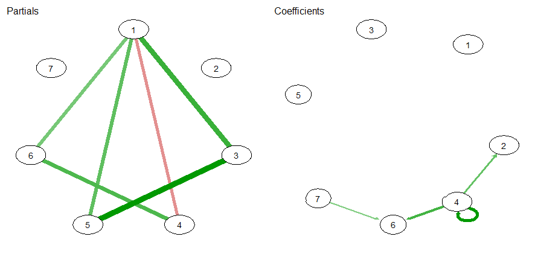

Introduction
This vignette describes the implemention for a “graphical VAR” in
BGGM. In BGGM, this is fitted as a
multivariate regression. The key innovation is a novel prior
distribution for the residual covariance matrix. There are a variety of
much cooler names than a mere “multivariate regression”,
including “VAR” (vector autoregressive models) and “TSCGM” (time series
chain graphical model).
R package
# need the developmental version
if (!requireNamespace("remotes")) {
install.packages("remotes")
}
# install from github
remotes::install_github("donaldRwilliams/BGGM")
library(BGGM)
# for comparsion
library(vars)
# for plotting
library(qgraph)
# combine plots
library(cowplot)Estimation
The methods in BGGM are organized around Bayesian “estimation” and “hypothesis testing”. This is to reach a broader audience, as former is more similar to classical methods (those more familiar to researchers).
Fit Model
With the data in hand, the model is fitted as follows
# fit model
fit <- var_estimate(Y, beta_sd = 1)Note that beta_sd is the prior distribution for the
regression coefficients. A smaller value, say,
beta_sd = 0.25, results in a Bayesian ridge regression.
Note also this model, including 5000 draws from the posterior, was
estimated in less than 1 second.
The results can then be printed
# print
fit
#> BGGM: Bayesian Gaussian Graphical Models
#> ---
#> Vector Autoregressive Model (VAR)
#> ---
#> Posterior Samples: 5000
#> Observations (n): 94
#> Nodes (p): 7
#> ---
#> Call:
#> var_estimate(Y = Y, beta_sd = 10)
#> ---
#> Partial Correlations:
#>
#> interested disinterested excited upset strong stressed steps
#> interested 0.000 -0.170 0.388 -0.217 0.313 0.268 0.089
#> disinterested -0.170 0.000 -0.172 -0.029 0.094 0.160 -0.078
#> excited 0.388 -0.172 0.000 -0.126 0.500 -0.161 -0.016
#> upset -0.217 -0.029 -0.126 0.000 0.118 0.350 -0.039
#> strong 0.313 0.094 0.500 0.118 0.000 -0.010 0.176
#> stressed 0.268 0.160 -0.161 0.350 -0.010 0.000 -0.038
#> steps 0.089 -0.078 -0.016 -0.039 0.176 -0.038 0.000
#> ---
#> Coefficients:
#>
#> interested disinterested excited upset strong stressed steps
#> interested.l1 0.230 -0.009 0.182 -0.102 0.178 0.018 0.113
#> disinterested.l1 -0.051 -0.007 0.056 -0.019 0.049 0.091 -0.023
#> excited.l1 -0.088 -0.196 0.003 0.057 -0.093 0.092 0.106
#> upset.l1 -0.155 0.262 -0.097 0.435 0.057 0.324 -0.091
#> strong.l1 0.026 0.182 0.026 0.048 0.189 -0.073 -0.196
#> stressed.l1 -0.021 -0.014 -0.033 -0.048 -0.079 0.152 0.133
#> steps.l1 -0.157 0.180 -0.211 0.155 -0.092 0.209 0.042
#> ---
#> Date: Thu Jun 04 08:54:04 2020 Note that the coefficients are comparable, given each variable has
been standardized (e.g., the predictors and the outcome are
standardized). BGGM does not compute the partial directed
correlation (PDC) by default (as in graphicalVAR). This
is because the standardized effects can readily be tested with the Bayes
factor, both across and within each model, whereas this does not seem
straightforward for the PDC (which requires a transformation).
Compare to Classical
Here are the estimates from the vars package
t(round(
vars::Bcoef(
vars:::VAR(scale(na.omit(Y)), type = "none")),
digits = 3)
)
#> interested disinterested excited upset strong stressed steps
#> interested.l1 0.229 -0.012 0.184 -0.100 0.180 0.015 0.112
#> disinterested.l1 -0.050 -0.006 0.057 -0.019 0.050 0.092 -0.022
#> excited.l1 -0.088 -0.193 0.002 0.056 -0.091 0.093 0.106
#> upset.l1 -0.155 0.260 -0.096 0.436 0.058 0.321 -0.092
#> strong.l1 0.027 0.182 0.025 0.047 0.188 -0.073 -0.192
#> stressed.l1 -0.021 -0.012 -0.033 -0.046 -0.077 0.152 0.133
#> steps.l1 -0.157 0.183 -0.210 0.153 -0.093 0.207 0.041Recall that the “estimation” methods are similar to, in this case,
ordinary least squares. The graphical structure in BGGM is
determined with credible intervals, which will be quite similar to using
confidence intervals. Hence for those researchers unfamiliar with
Bayesian methods the “estimation” methods are perhaps a nice place to
start.
Summarize Model
The model can also be summarized with
print(
summary(fit, cred = 0.95),
param = "pcor"
)
#> BGGM: Bayesian Gaussian Graphical Models
#> ---
#> Vector Autoregressive Model (VAR)
#> ---
#> Partial Correlations:
#>
#> Relation Post.mean Post.sd Cred.lb Cred.ub
#> interested--disinterested -0.170 0.108 -0.382 0.044
#> interested--excited 0.388 0.085 0.219 0.546
#> disinterested--excited -0.172 0.104 -0.369 0.049
#> interested--upset -0.217 0.106 -0.417 0.000
#> disinterested--upset -0.029 0.101 -0.239 0.161
#> excited--upset -0.126 0.098 -0.315 0.066
#> interested--strong 0.313 0.090 0.135 0.480
#> disinterested--strong 0.094 0.112 -0.120 0.318
#> excited--strong 0.500 0.078 0.337 0.645
#> upset--strong 0.118 0.109 -0.100 0.325
#> interested--stressed 0.268 0.102 0.058 0.460
#> disinterested--stressed 0.160 0.100 -0.049 0.351
#> excited--stressed -0.161 0.099 -0.358 0.031
#> upset--stressed 0.350 0.091 0.166 0.519
#> strong--stressed -0.010 0.107 -0.212 0.201
#> interested--steps 0.089 0.108 -0.123 0.297
#> disinterested--steps -0.078 0.108 -0.284 0.125
#> excited--steps -0.016 0.100 -0.207 0.182
#> upset--steps -0.039 0.107 -0.245 0.178
#> strong--steps 0.176 0.101 -0.024 0.364
#> stressed--steps -0.038 0.108 -0.236 0.193
#> --- The coefficients can also be printed by changing param
to either all or beta, The summary can also be
plotted. Here are the coefficients
plts <- plot(summary(fit, cred = 0.95))
cowplot::plot_grid(
cowplot::plot_grid(
plts$beta_plt$interested,
plts$beta_plt$disinterested,
plts$beta_plt$excited,
nrow = 1),
cowplot::plot_grid(
plts$beta_plt$upset,
plts$beta_plt$strong,
plts$beta_plt$stressed,
nrow = 1
),
nrow = 2)
There is a plot for the partial correlations in the object
plts.
Select Graph
The graphs are selected with
select(fit, cred = 0.95)
#> BGGM: Bayesian Gaussian Graphical Models
#> ---
#> Vector Autoregressive Model (VAR)
#> ---
#> Posterior Samples: 5000
#> Credible Interval: 95 %
#> ---
#> Call:
#> var_estimate(Y = Y, beta_sd = 10)
#> ---
#> Partial Correlations:
#>
#> interested disinterested excited upset strong stressed steps
#> interested 0.000 0 0.388 -0.217 0.313 0.268 0
#> disinterested 0.000 0 0.000 0.000 0.000 0.000 0
#> excited 0.388 0 0.000 0.000 0.500 0.000 0
#> upset -0.217 0 0.000 0.000 0.000 0.350 0
#> strong 0.313 0 0.500 0.000 0.000 0.000 0
#> stressed 0.268 0 0.000 0.350 0.000 0.000 0
#> steps 0.000 0 0.000 0.000 0.000 0.000 0
#> ---
#> Coefficients:
#>
#> interested disinterested excited upset strong stressed steps
#> interested.l1 0 0.000 0 0.000 0 0.000 0
#> disinterested.l1 0 0.000 0 0.000 0 0.000 0
#> excited.l1 0 0.000 0 0.000 0 0.000 0
#> upset.l1 0 0.262 0 0.435 0 0.324 0
#> strong.l1 0 0.000 0 0.000 0 0.000 0
#> stressed.l1 0 0.000 0 0.000 0 0.000 0
#> steps.l1 0 0.000 0 0.000 0 0.209 0
#> --- Plot Graph
For plotting, I use the qgraph package.
par(mfrow=c(1,2))
qgraph::qgraph(sel$pcor_weighted_adj, title = "Partials")
qgraph::qgraph(sel$beta_weighted_adj, title = "Coefficients")
Predictability
Finally, it is also possible to compute predictability, in this case Bayesian
r2 <- predictability(fit)
# print
r2
#> BGGM: Bayesian Gaussian Graphical Models
#> ---
#> Metric: Bayes R2
#> Type: continuous
#> ---
#> Estimates:
#>
#> Node Post.mean Post.sd Cred.lb Cred.ub
#> interested 0.144 0.057 0.050 0.271
#> disinterested 0.166 0.061 0.060 0.302
#> excited 0.127 0.054 0.039 0.250
#> upset 0.220 0.070 0.093 0.368
#> strong 0.116 0.051 0.035 0.232
#> stressed 0.227 0.069 0.102 0.373
#> steps 0.105 0.047 0.032 0.210The object r2 can also be plotted
plot(r2, type = "ridgeline")